Em css selecionamos os elementos do html especificos que queremos customizar, o css consist em uma declaração de propriedade css, por exemplo, para trazemos cores para a "borda" de nossos elementos usamos o seletor "body".
Abaixo um exemplo mostrando a sintáxe desse seletor em um arquivo CSS
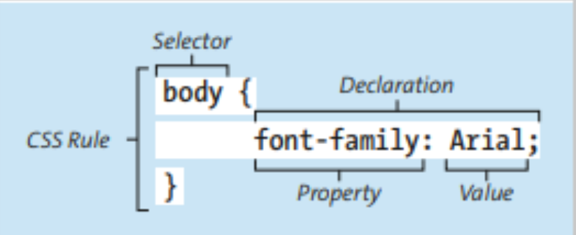
Em geral, Css possue certas regras para a sua inclusão no arquivo html, entre elas:
Uma estrátegia bem usada e usar varios arquivos css para darem a atmofera visual a cada parte do arquivo principal, outro ponto e o reuso de alguns elemento presentes no css base, esse mesmo evento pode ser aplicado em um único arquivo css, servindo como base para múltiplos arquivos, vale destaca que mesmo o css possuindo uma tag chamada style, onde os atributos css são posicionados difernete de um arquivo solo, não pode ser rutilizado por terceiros.comforme mostrado na imagem abaixo.
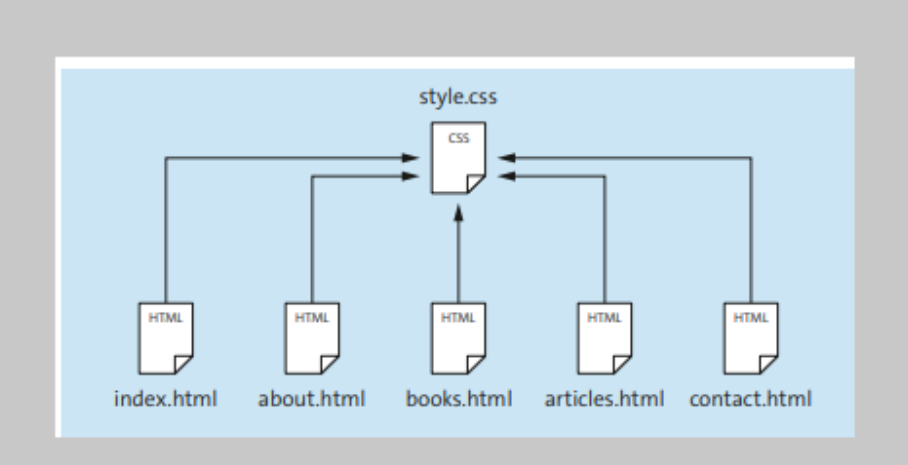
Na parte do link o atributo rel especifica ao navegado se ele deve usar aquele arquivo como layoud principal, ou se deve espera alguma reação externar para ele ser ativado.
Em css, você pode optar por importa outros arquivos css, em um único arquivo, desde que ele possuar a sintáxe correta.
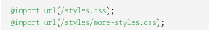
Para derfinimos elementos css, usamos certos seletores especificos dentro do arquivo style, seja antes ou depois da determinada TAG que queremos altera a aparência dessebdeterminado elemento.
Abaixo alguns exemplos de como seleciona tags especificas, para manipulamos a aparência das tags dentro de nosso arquivo(s) css(s)
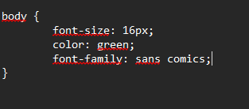
conforme inlustrado na imagem acima.
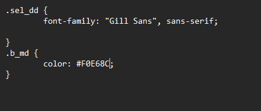
o exemplo acima inlustra como ocorre a atribuição na classe.
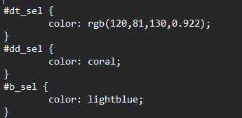
no exemplo acima é mostrado a sintáxe usada
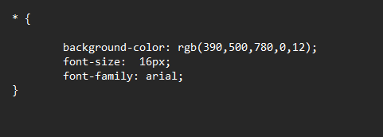
exemplo acima inlustra a declaração de um elemento universal>
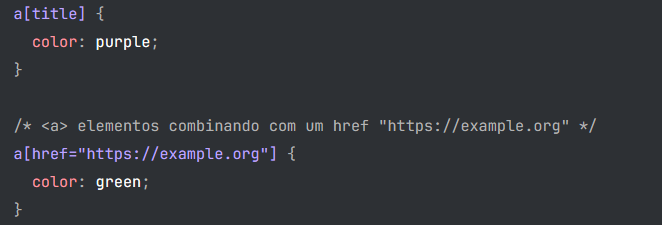
imagem retirada do site https://developer.mozilla.org/pt-BR/docs/Web/CSS/Reference/Selectors/Attribute_selectors
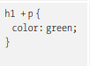
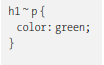
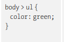
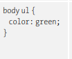
Essas especificações são necessárias, pois o css se da de modo cascata ou seja, se dwfimos algo em uma TAG ela será atribuída a todas as outras tags que criamos , por isso existe essas especificações sobre a seleção de TAG em css, disso facilmente informarmos o que queremos mudar em nosso arquivo.
no exemplo abaixo definimos de maneira explícita o do porque a essas seleções de tags são tão importantes. note que na primeira imagem, selecionamos o mesmo elementos de maneira similar, entretanto no arquivo index. html, eles possuem características distintivas, enquanto um serve como arquivo de cabeçalho ou outro servir como título de capítulo, gerando, bem um confusão em distinguir quem é quem. para mudar isso , podemos usar uma classe ou até um os na TAG capítulo e atribuir a ela a cor diferente da TAG H1 titular, conseguindo assim distinguir ela das demais.
Em css, existe vários atributos que interagem entre sim de maneira bem dinâmica, um exemplo comum e o atributo font-size, que interagem diretamente com o atributo color, ambos servem para manipular o texto, onde font-size aplicamos em dia forma primitiva o tamanho da fonte enquanto em color definimos a cor que queremos àquele texto.
Background-color, serve para dar cor a sua página web servindo como o fundo dela, existe várias formas de definimos essa coloração, entre elas estão: nome da cor, onde aqui especificamos qual. cor daremos ao nosso body ou div especifica.
Em css podermos definir fontes por meio do elemento font-family, essas fontes varias conforme a necessidade ou escolha do programador.
Para que sua fonte seja adicionada basta escrever seu nome após o elemento font-family, onde ele será atribuido ao texto, entre as mais usadas destaca-se as :
Em há um elemento em css que sirva para manipular o tamanho do texto, conhecido como font-size, você pode especificar o tamanho por meio de px, ao fim do numero, assim como informa uma pocentagem do preeenchimento assim como Em especificando a largura.

Há tambem outras formas de manipular o texto, por exemplo alterando a sua cor, dando assim uma aparencia mais agradavel, além disso é possivel criar algumas bricadeiras divertidas usando :, eles podem ser usados para mascara um resultado, por exemplo se uma pessoa acesso o link do site ele permite essa alteração de cor dando mais vida a págian.

Teste o código abaixo.
linkOs componetes de listas podem ser customizados no css usando o agumentos especificos, contidos na sua estrutura.
Para cria uma lista, você precisa especifica os stributos necessario delas, além de dizer o que dever mudar
a lista abaizo foi totalmente feita usando o ensinado neste tópico.
Além do modelo usado neste exemplo existe inúmeras outras maneiras de usar esse esse metodos, seja na construção de tabelas para empressas ou na organização pessoal.
Abaixo um exemplo de tabela feita apartir de listas não ordenada.
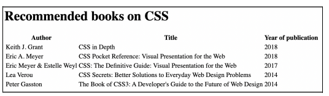
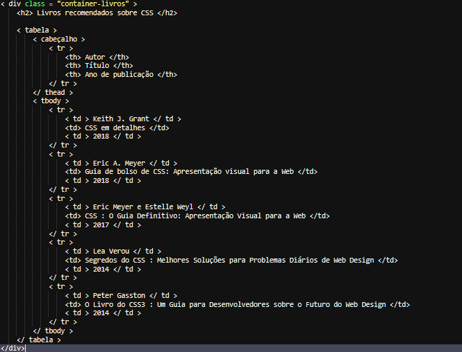

o HTML e o CSS gerenciam a disposição dos elementos na tela, dividindo-se em três pilares principais: o tipo de elemento, o modo de posicionamento e o sistema de layout (com foco no Float).
A estrutura padrão do HTML divide os elementos em duas categorias de fluxo de texto:
Neste tipo de layoud usamos elementos float, para alinhamos perfeitamnete os elementos fisicos em nossa tela.
Funcionalidades:
A propriedade float:left ou float right, empurram os elemntos patrras as direções esquerda ou direirta, ao aplicamos em um formuklario alguns elemntos ficam desalihado para isso então usamos esses elementos, o truque tambem é usar o elemento overflow, que obriga o container a abrigar os elemntos flunates em sua estrutura.
Conforme mostrado no exemplo a seguir:
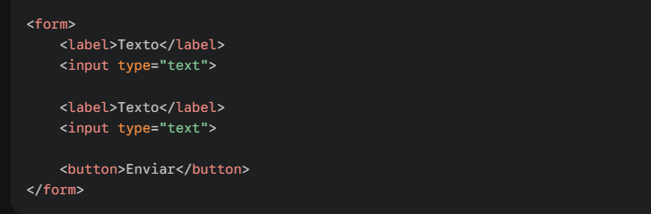
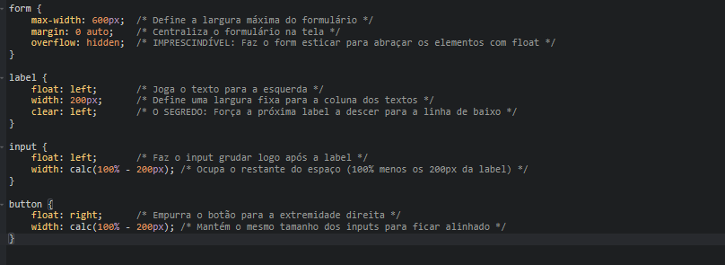
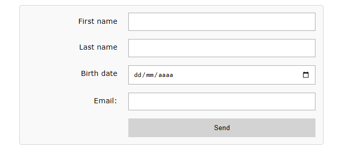
a imagem acima mostra o resultando do código fornecido pela ia gemini do google.
Layouts fexíveis foram introduzidos pela primeria vez no css3 , com isso, se tronou possivel criar elementos dinâmicos e ajusta a largura e o tamnho dos elementos dentro do esbaço acolhido.
Em css, o display da tela e idividual entre os intens incluindo o alinhamento, no exemplo abaixo tentaremos inlustra de maneira clara.
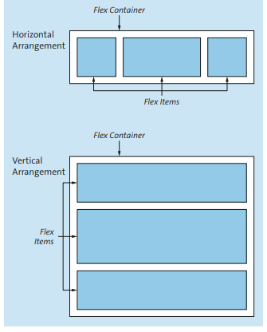
a imagem acima inlustra a forma como o layout flexivel atual perante a sua tela principal.
| Propriedade | Refere-se a... | Definição |
|---|---|---|
| Tela | conteiner felxivel | trata-se de um container que pode ser manipulado de lugares distintos dentro da tala. |
| direção feleixel | container flexivel | especificar a direção que os intens serão alinhas dentro do container |
| container wrap | container flexivel | controlar o container sigular multilina dentro da coluna |
| container justificados | container felexivel | define quese os espaço esta pronto para distribir os intes em seu espaço. |
| align-intens | container flexivel | Orientar onde todos os elemntos devem ser flexinados na tela |
| Flexão basicas | intem flexivel | controla os valores de acordo com a ordem numerica |
| flex | intem flexivel | Projeta pré visalução ao proprietario no caso programador. |
Para exemplicamos melhor colocaremos um exemplo abaixo que mostra de maneira explicita essa formação de um layout flexivel.
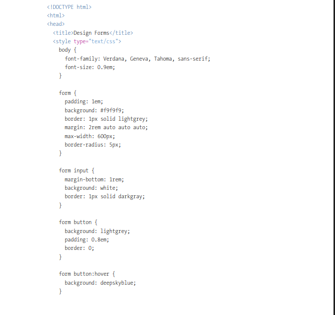
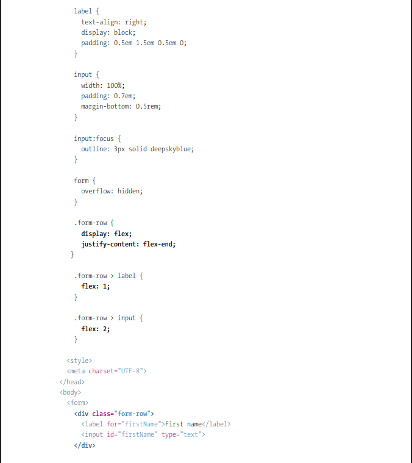


o exemplo acima mostra como contruimos um layout flecivek e funcional de um sitema de casdatração, note que varios elemento poarecem está alinhados de maneira ordenada simbolizando do amior ao menor
Em grid podemos flexionar os elemntos em duias posições simutaneamente, o que tente a ser mais dinâmico em termos de usabilidade
as principais propriedades incluem:
Um exemplo prático é o alinhamento de intesn quando falamos de um formulario, o que pode ser benefico já que com isso não a necessiade da criação de varias div apenas para manipula os intns dentro da div prinmcipal.
conforme mostrado abaixo:
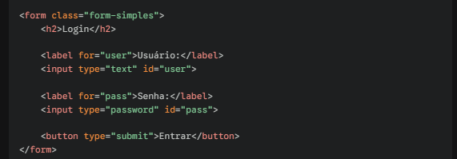
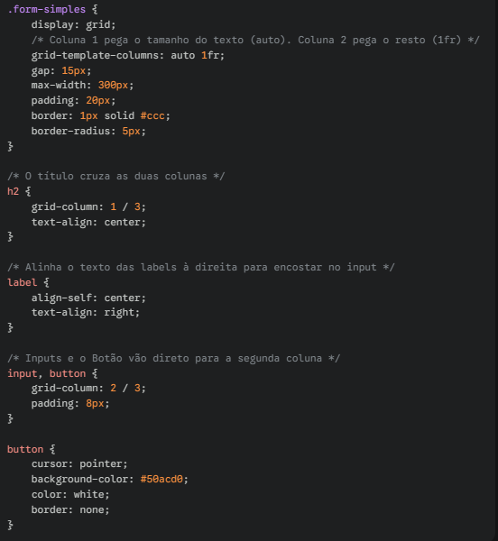
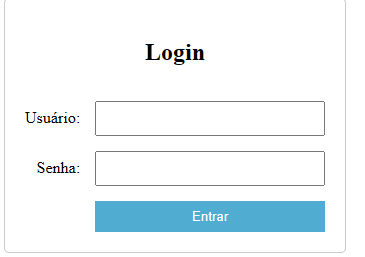
Conforme inlustrado no exemplo acima.